전기기능장 (2009-03-29 기출문제)
1과목: 임의구분
1. 인덕턴스 L=20[mH]인 코일에 실효값 V=50[V], 주파수 f=60[Hz]인 정현파 전압을 인가했을 때 코일에 축적되는 평균 자기 에너지 WL[J]는 약 얼마인가?
- 6.3
- 4.4
- 0/63
- 0.44
(정답률: 64%)

2. 다음 중 변압기의 효율(η)을 나타낸 것으로 가장 알맞은 것은?
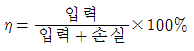
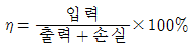
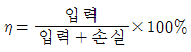
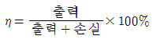
(정답률: 85%)
3. 합성수지관 상호 및 관과 박스는 접속시에 삽입하는 깊이를 관 바깥지름의 몇 배 이상으로 하여야 하는가? (단, 접착제를 사용하지 않는다.)
- 0.8
- 1.0
- 1.2
- 1.4
(정답률: 93%)
4. 사이리스터의 유지전류(holding current)에 관한 설명으로 옳은 것은?
- 사이리스터가 턴온(turn on) 하기 시작하는 순전류
- 게이트를 개방한 상태에서 사이리스터가 도통상태를 유지하기 위한 최소의 순전류
- 사이리스터의 게이트를 개방한 상태에서 전압을 상승 하면 급히 증가하게 되는 순전류
- 게이트 전압을 인가한 후에 급히 제거한 상태에서 도통상태가 유지되는 최소의 순전류
(정답률: 81%)
5. 인스트럭션(Instruction)의 길이를 줄이는 방법이 아닌 것은?
- PC(prongram counter)를 사용한다.
- 다음 인스트럭션의 주소를 인스트럭션에 포함시킨다.
- 오퍼랜드(Operand)중의 하나의 결과를 저장한다.
- 레지스터내에 있는 자료만을 오퍼레이션(Operation)에 사용한다.
(정답률: 33%)
6. 발광소자와 수광소자를 하나의 용기에 넣어 외부의 빛을 차단한 구조로 출력 측의 전기적인 조건이 입력 측에 전혀 영향을 끼치지 않는 소자는?
- 포토 다이오드
- 포토 트랜지스터
- 서미스터
- 포토 커플러
(정답률: 87%)
7. 각 상의 임피던스가 Z=6+j8[Ω]인 평형 Y결선 부하에 선간전압 220[V]의 대칭 3상전압을 인가하였을 때 흐르는 선전류는 약 몇[A]인가?
- 8.7
- 10.5
- 12.7
- 17.5
(정답률: 71%)
8. 산술 및 논리연산의 결과를 일시 보존하는 레지스터는?
- Accumulator
- Instruction register
- Arithmetic register
- Storage register
(정답률: 53%)
9. 다음 중 바리스터(Varister)의 주된 용도는?
- 전압 증폭용
- 서지전압에 대한 회로 보호용
- 출력전류 조정용
- 과전류방지 보호용
(정답률: 90%)
10. 다음 중 지중 송전선로의 구성 방식이 아닌 것은?
- 방사상 환상 방식
- 루프 방식
- 가지식 방식
- 단일 유닛 방식
(정답률: 85%)
11. 동기 전동기의 여자 전류가 증가하면 어떤 현상이 생기나?
- 토크가 증가한다.
- 전기자 전류의 위상이 앞선다.
- 난조가 생긴다.
- 앞선 무효 전류가 흐르고 유도 기전력은 높아진다.
(정답률: 59%)
12. 회로에서 단자 AB간의 합성저항은 몇 [Ω]인가?
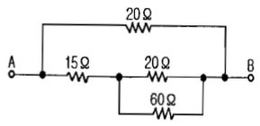
- 10
- 12
- 15
- 30
(정답률: 71%)
13. C[F]의 콘덴서에 V[V]의 전압을 가한 결과 Q[C]의 전기량이 충전되었다. 이 콘덴서에 저장된 에너지 [J]는 어떻게 표현되는가?
- 2CV
- 2CV2
- 1/2CV
- 1/2CV2
(정답률: 80%)
14. 다음 중 전선의 접속 원칙이 아닌 것은?
- 전선의 허용전류에 의하여 접속 부분의 온도 상승값이 접속부 이외의 온도 상승값을 넘지 않도록 한다.
- 접속 부분은 접속관, 기타의 기구를 사용한다.
- 전선의 강도를 30% 이상 감소시키지 않는다.
- 구리와 알루미늄 등 다른 종류의 금속 상호간을 접속할 때에는 접속부에 전기적 부식이 생기지 않도록 한다.
(정답률: 91%)
15. 3상 동기 발전기를 병렬 운전시키는 경우 고려하지 않아도 되는 조건은?
- 기전력의 위상이 같을 것
- 회전수가 같을 것
- 기전력의 크기가 같을 것
- 상회전 방향이 같을 것
(정답률: 78%)
16. 사이리스터를 이용한 정류회로에서 직류전압의 맥동률이 가장 작은 정류 회로는?
- 단상 반파 정류회로
- 단상 반파 정류회로
- 3상 전파 정류회로
- 3상 반파 정류회로
(정답률: 80%)
17. 단상 직권 정류자 전동기의 회전 속도를 높이는 이유는?
- 전기자에 유도되는 역기전력을 적게 한다.
- 역률을 개선한다.
- 토크를 증가시킨다.
- 리액턴스 강하를 크게 한다.
(정답률: 77%)
18. 동기기의 전기자 도체에 유기되는 기전력의 크기는 그 주파수를 2배로 했을 경우 어떻게 되는가?
- 2배로 증가
- 2배로 감소
- 4배로 증가
- 4배로 감소
(정답률: 67%)
19. 3상 동기 발전기의 각 상의 유기 기전력 중에서 제5고조파를 제거하려면 코일 간격/극 간격을 어떻게 하면 되는가?
- 0.5
- 0.6
- 0.7
- 0.8
(정답률: 68%)
20. 마이크로 프로세서의 주소버스(ADDRESS BUS)선의 수가 “20”인 경우, 접근할 수 있는 최대 메모리의 크기는 몇 byte인가?
- 256
- 512
- 1K
- 1M
(정답률: 59%)
2과목: 임의구분
21. 다음 중 플립플롭 회로에 대한 설명으로 잘못된 것은?
- 두 가지 안정 상태를 갖는다.
- 쌍안정 멀티바이브레이터이다.
- 반도체 메모리 소자로 이용된다.
- 트리거 펄스 1개마다 1개의 출력펄스를 얻는다.
(정답률: 87%)
22. 빌딩의 부하 설비 용량이 2000[kW], 부하역률 90[%], 수용률이 75[%]일 때 수전 설비의 용량은 약 몇[KVA]인가?
- 1554
- 1666
- 1800
- 2400
(정답률: 73%)
23. 다음 중 보호선과 전압선의 기능을 겸한 전선은?
- PEM선
- PEL선
- PEN선
- DV선
(정답률: 84%)
24. TRIAC을 사용하여 소용량 저항부하의 AC 전력제어를 하려고 한다. 게이트용 소자로 가장 간단히 사용 할 수 있는 것은?
- UJT
- PUT
- DIAC
- SUS
(정답률: 86%)
25. 셀룰로이드, 성냥, 석유류 등 기타 가연성 위험물질을 제조 또는 저장하는 장소의 배선에서 사용할 수 없는 공사 방법은?
- 케이블 공사
- 금속관 공사
- 애자 사용 공사
- 합성수지관 공사
(정답률: 84%)
26. 고속의 입·출력장치와 메모리간에 CPU를 통하지 않고 직접 데이터를 주고 받는 입·출력 제어방법을 무엇이라 하는가?
- Interrupt
- DMA(Diredt memory Access)
- time sharing
- interruption
(정답률: 52%)
27. 다음 중 저압 연접인입선의 시설기준으로 옳지 않은 것은?
- 인입선에서 분기되는 점에서 100m를 초과하지 말것
- 폭 5m를 초과하는 도로를 횡단하지 말 것
- 옥내를 관통하지 말 것
- 지름은 최소 4.0mm 이상의 경동선을 사용할 것
(정답률: 84%)
28. 다음 그림과 같은 논리회로의 논리식은?
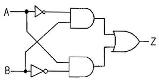
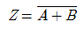
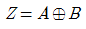
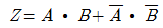
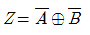
(정답률: 67%)
29. 변압기에서 부하전류 및 전압은 일정하고, 주파수만 낮아지면 변압기는 어떠헥 되는가?
- 철손이 증가한다.
- 철손이 감소한다.
- 동손이 증가한다.
- 동손이 감소한다.
(정답률: 62%)
30. 프로그램 작성 후 기계어 번역 때나 수행할 때 문법적, 논리적 오류를 찾아서 바로 고치는 작업을 무엇이라 하는가?
- loading
- editing
- debugging
- trouble shooting
(정답률: 60%)
31. 수행할 명령의 주소를 기억하고 있는 레지스터는?
- Accumulator
- Program Counter
- Instruction Register
- Magnetic Bubble Memory
(정답률: 37%)
32. 일정 전압으로 운전하는 직류 발전기의 손실이 x+y I2으로 된다고 한다. 어떤 전류에서 효율이 최대로 되는가? (단, x, y는 정수이다.)
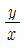
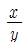
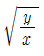
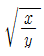
(정답률: 69%)
33. 논리식 “A+AB"를 간단히 계산한 결과는?
- A
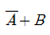
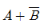
- A+B
(정답률: 85%)
34. 다음 중 전류에 의해 만들어지는 자기장의 자기력선 방향을 간단하게 알아내는 법칙은?
- 앙페르의 오른나사 법칙
- 렌츠의 법칙
- 플레밍의 왼손법칙
- 가우스의 법칙
(정답률: 85%)
35. 부흐홀츠 계전기로 보호되는 기기는?
- 변압기
- 발전기
- 동기전동기
- 회전변류기
(정답률: 81%)
36. 어떤 정현파 전압의 평균값이 191[V]이면 최대값은 약 몇[V]인가?
- 240
- 270
- 300
- 330
(정답률: 67%)
37. 3상 유도전동기의 회전자 입력 P 슬립 s 이면 2차 동손은 어떻게 표현되는가?
- sP2
- (2s-1)P2
- (s+1)P2
- (1-s)P2
(정답률: 91%)
38. 지상역률 80[%]인 1000[KVA]의 부하를 100[%]의 역률로 개선하는데 필요한 전력용 콘덴서의 용량은 몇[KVA]인가?
- 200
- 400
- 600
- 800
(정답률: 76%)
39. 다음 중 전계의 세기를 구하는 법칙은?
- 비오-사바르의 법칙
- 가우스의 법칙
- 플레밍의 왼손법칙
- 암페어의 법칙
(정답률: 72%)
40. 다음 그림과 같은 회로의 명칭은?
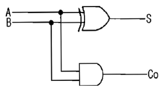
- 일치회로
- 반일치회로
- 감산기회로
- 반가산기회로
(정답률: 83%)
3과목: 임의구분
41. DC를 AC로 변환시키는 변환장치는?
- 초퍼
- 인버터
- 정류기
- 사이클로 컨버터
(정답률: 91%)
42. 변압기의 등가회로 작성에 필요 없는 시험은?
- 단락시험
- 반환부하법
- 무부하시험
- 저항측정시험
(정답률: 75%)
43. 누전경보기의 시설방법에서 경보기의 조작 전원은 전용 회로를 두고 또한 이에 설치하는 개폐기로 배선용 차단기를 사용할 때 몇[A] 이하의 것을 사용하는가?
- 20[A]
- 30[A]
- 40[A]
- 50[A]
(정답률: 68%)
44. 단상 3선식 선로에 그림과 같이 부하가 접속 되어있을 경우에 설비 불평형률은 약 몇 [%] 인가?
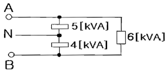
- 13.33
- 14.33
- 15.33
- 16.33
(정답률: 80%)
45. 전기자 권선에 의해 생기는 전기자 기자력을 없애기 위하여 주 자극의 중간에 작은 자극으로 전기자 반작용을 상쇄하고 또한 정류에 의한 리액턴스 전압을 상쇄하여 불꽃을 없애는 역할을 하는 것은?
- 보상권선
- 공극
- 전기자권선
- 보극
(정답률: 85%)
46. 우선순위 인터럽트 처리 방법 중 소프트웨어에 의한 방법은?
- 폴링 방법(polling method)
- 스트로브 방법(strobe method)
- 데이지-체인 방법(daisy-chain method)
- 우선순위 인코더 방법(priority encoder method)
(정답률: 48%)
47. 권선형 유도전동기에서 2차측 저항을 2배로 하면 그 최대 토크는 몇 배로 되는가?
- 1/2
- √2
- 2
- 불변
(정답률: 88%)
48. 접지 저감재의 구비조건과 거리가 먼 것은?
- 전기적으로 양도체일 것
- 지속성이 있을 것
- 전극을 부식시키지 않을 것
- 토양에 비해 도전도가 낮을 것
(정답률: 80%)
49. 다음 중 2방향성 3단자 사이리스터는 어느 것인가?
- SCS
- TRIAC
- SSS
- SCR
(정답률: 80%)
50. 동기 발전기의 단락비를 계산하는 데 필요한 시험의 종류는?
- 무부하 포회 시험과 3상 단락시험
- 정상, 영상 리액턴스 측정시험
- 돌발 단락시험과 부하시험
- 단상 단락시험과 3상 단락시험
(정답률: 87%)
51. 최대사용전압 3300[V]의 고압 전동기가 있다. 이 전동기의 절연내력 시험전압은 몇[V]인가?
- 3925
- 4250
- 4950
- 1⑤00
(정답률: 80%)
52. 그림과 같은 R-L-C 병렬 공진회로에 관한 설명 중 옳지 않은 것은?
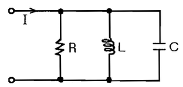
- R이 작을수록 Q가 높다.
- 공진시 L 또는 C를 흐르는 전류는 입력 전류 크기의 Q배가 된다.
- 공진 주파수 이하에서의 입력 전류는 전압보다 위상이 뒤진다.
- 공진시 입력 어드미턴스는 매우 작아진다.
(정답률: 80%)
53. 다음 심벌의 명칭은?
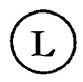
- 전류제한기
- 전등제한기
- 전압제한기
- 역률제한기
(정답률: 86%)
54. 길이 50[cm]인 직선상의 도체봉을 자속밀도 0.1[Wb/m2]의 평등 자계 중에 자계와 수직으로 놓고 이것을 50[m/s]의 속도로 자계와 60°의 각으로 움직였을 때 유도기전력은 약 몇[V]가 되는가?
- 1.08
- 1.25
- 2.17
- 2.51
(정답률: 63%)
55. 다음 [표]는 A 자동차 영업소의 월별 판매 실적을 나타낸 것이다. 5개월 단순이동평균법으로 6월의 수요를 예측하면 몇 대인가?
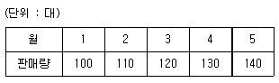
- 120
- 130
- 140
- 150
(정답률: 84%)
56. 부적합품률이 1%인 모집단에서 5개의 시료를 랜덤하게 샘플링할 때, 부적합품수가 1개일 확률은 약 얼마인가? (단, 이항분포를 이용하여 계산한다.)
- 0.048
- 0.⑤8
- 0.48
- 0.58
(정답률: 70%)
57. 품질관리 기능의 사이클을 표현한 것으로 옳은 것은?
- 품질개선 - 품질설계 - 품질보증 - 공정관리
- 품질설계 - 공정관리 - 품질보증 - 품질개선
- 품질개선 - 품질보증 - 품질설계 - 공전관리
- 품질설계 - 품질개선 - 공정관리 - 품질보증
(정답률: 70%)
58. 다음 중 반즈(Ralph M. Barnes)가 제시한 동작경제의 원칙에 해당되지 않는 것은?
- 표준작업의 원칙
- 신체의 사용에 관한 원칙
- 작업장의 배치에 관한 원칙
- 공구 및 설비의 디자인에 관한 원칙
(정답률: 64%)
59. 다음 중 계수치 관리도가 아닌 것은?
- c관리도
- p관리도
- u관리도
- x관리도
(정답률: 74%)
60. 다음 검사의 종류 중 검사공정에 의한 분류에 해당 되지 않는 것은?
- 수입검사
- 출하검사
- 출장검사
- 공정검사
(정답률: 89%)
WL = 1/2 * L * Ieff2
여기서 Ieff는 주파수가 f일 때의 효과적인 전류입니다. 정현파 전압을 인가했으므로 전류도 정현파일 것입니다. 따라서 Ieff는 다음과 같이 구할 수 있습니다.
Ieff = V / (sqrt(2) * L * 2 * pi * f)
여기에 주어진 값들을 대입하면,
Ieff = 50 / (sqrt(2) * 0.02 * 2 * pi * 60) ≈ 1.77[A]
WL = 1/2 * 0.02 * 1.772 ≈ 0.44[J]
따라서 정답은 "0.44"입니다.